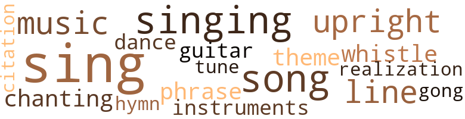
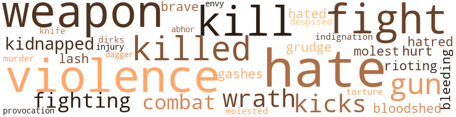
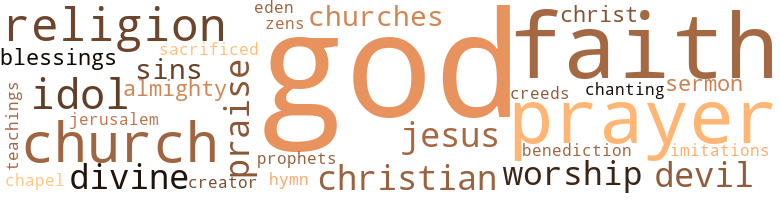

Uncle Ezra Holds Prayer Meeting in the White House, by Turnor, Mae Caesar (1970)
31 music-related terms matched in this text.
Most frequent terms in this topic: sing (4); sings (3); singing (3); line (2); upright (2)
dance.n.01
Definition: an artistic form of nonverbal communication
| word | sentence |
|---|---|
| dance | Very soon , a chubby , red-faced admirer , wearing a wide grey hat tilted to the side advances to Camile supposedly to ask for a dance . |
gong.n.01
Definition: a percussion instrument consisting of a metal plate that is struck with a softheaded drumstick
| word | sentence |
|---|---|
| gong | I 'm given the gong . |
guitar.n.01
Definition: a stringed instrument usually having six strings; played by strumming or plucking
| word | sentence |
|---|---|
| guitar | From an old , large , dimly lit building comes the sound , " Tum - a-lum-lum " from a loosely strung guitar , so loose that the strings might have been tied into a knot . |
hymn.n.01
Definition: a song of praise (to God or to a saint or to a nation)
| word | sentence |
|---|---|
| hymn | The table which once held the large , cut-glass bowl of cocktails , is now graced with a hymn book and the Bible . |
music.n.01
Definition: an artistic form of auditory communication incorporating instrumental or vocal tones in a structured and continuous manner
| word | sentence |
|---|---|
| music | He declares , " Since America is God 's last chance to make a world , we must destroy now the static which is in the radio of our inner selves , dial the true number , tune in with the Master Of Song , whose music rings out with everlasting sweetness . |
| music | Ladies in bare-backed dresses who once glided over the floor to the music of swing , are seen no more . |
musical_instrument.n.01
Definition: any of various devices or contrivances that can be used to produce musical tones or sounds
| word | sentence |
|---|---|
| instruments | He does not believe in waiting for the more prosperous group to grant certain privileges , but he declares that pressure and agitation are valuable instruments to use in bringing some things to public notice . |
phrase.n.02
Definition: a short musical passage
| word | sentence |
|---|---|
| phrase | He defines " The Great Society " only as a phrase of promise , to be fulfilled possibly in the next century . |
quotation.n.02
Definition: a passage or expression that is quoted or cited
| word | sentence |
|---|---|
| citation | This young minister gave strong protest from the pulpit and in bold citation registered an official report of the many atrocities done to his group which were not only vile , but vicious and stupid . |
realization.n.03
Definition: a musical composition that has been completed or enriched by someone other than the composer
| word | sentence |
|---|---|
| realization | Delayed action in securing complete freedom is no longer the way toward complete realization for those who know and feel restrictions . |
sing.v.02
Definition: produce tones with the voice
| word | sentence |
|---|---|
| sings | The young minister of hope sings many songs , prays many prayers , and with no compromise , tells about the beatings of in nocent men , sluggings in the dark , lack of voting rights , and justice dangling in space . |
| sing | Just.as long as grass grows , birds sing , flowers bloom , that 's just how long as God lives . |
| sing | All eyes are turned upon the hour when the big aggregation shall be taking off for the greatest expedition of all time , for which unborn generations will be certain to sing its praise . |
| sings | Camile sings , " No never alone , no never alone . |
| sings | The consoling words find a welcome in Camile 's heart as she sings . |
| sing | In reverential expression pf gratitude and thanks giving , the group clasp hands and sing loud and long : Jesus , Savior , pilot me , Over life 's tempestuous sea ; Unknown waves before me roll , Hiding rocks and treacherous shoal , Chart and compass come from Thee , Jesus , Savior , pilot me . |
| sing | To this land of surprising blessings , we love to sing , O beautiful for spacious skies , For amber waves of grain , For purple mountain majesties , Above the fruited plain ! |
singing.n.01
Definition: the act of singing vocal music
| word | sentence |
|---|---|
| singing | Mule teams with some oxen are lining up to wagons , behind which are fastened tables and cook bags and parcels in certain places while voices are heard singing , " Jesus , Savior , pilot me over life 's tempestuous sea . " |
| singing | Voices are heard singing : The name of Jesus is so sweet , Ne'er from Him will I retreat , Close beside Him every day Ne'er from Him will I stray . |
| singing | singing , " If it was n't for the Lord , what would I do . " |
song.n.01
Definition: a short musical composition with words
| word | sentence |
|---|---|
| songs | The young minister of hope sings many songs , prays many prayers , and with no compromise , tells about the beatings of in nocent men , sluggings in the dark , lack of voting rights , and justice dangling in space . |
| Song | He declares , " Since America is God 's last chance to make a world , we must destroy now the static which is in the radio of our inner selves , dial the true number , tune in with the Master Of Song , whose music rings out with everlasting sweetness . |
| songs | The platform upon which the orchestra once sat is now used as a chapel where songs that thrill the soul are heard . |
theme.n.03
Definition: (music) melodic subject of a musical composition
| word | sentence |
|---|---|
| theme | He often encounters the theme of isolation , but a separate nation should not be in evidence ; such an idea never registers with this man of God , nor does it have influence over any of his followers . |
tone.v.01
Definition: utter monotonously and repetitively and rhythmically
| word | sentence |
|---|---|
| chanting | We do not condone a spirit of superiority in anyone ; I believe in securing spritual power first , and not just chanting the word . |
tune.n.01
Definition: a succession of notes forming a distinctive sequence
| word | sentence |
|---|---|
| line | Each driver steers his individual wagon in line ; every animal seems to understand what it 's all about , one wagon behind the other , awaiting the next gunfire , which is saying " Good-bye " to a South of many gains and many losses . |
| tune | He declares , " Since America is God 's last chance to make a world , we must destroy now the static which is in the radio of our inner selves , dial the true number , tune in with the Master Of Song , whose music rings out with everlasting sweetness . |
| line | Let us side - track now from all motives of wrong intention , and put upon the main line of our endeavor --- peace and good will to all men , everywhere --- in order to be accepted among the few of God 's elect . |
upright.n.02
Definition: a piano with a vertical sounding board
| word | sentence |
|---|---|
| upright | We beg of Thee , to help us foster an upright , clean government , free from laws in which children born out of wedlock are supported by monies sacrificed by the unfortunate masses . |
| upright | Help me to challenge their misgiving by walking upright before them . |
whistle.v.01
Definition: make whistling sounds
| word | sentence |
|---|---|
| whistle | Uncle Ezra I gives the whistle signal and every steed comes to a calm standstill . |
70 violence-related terms matched in this text.
Most frequent terms in this topic: hate (8); violence (5); weapon (5); kill (4); killed (4)
abhor.v.01
Definition: find repugnant
| word | sentence |
|---|---|
| abhor | Violence may be a popular trend and condoned by many , yet the wise man will shun and abhor the evil . |
aggravation.n.02
Definition: unfriendly behavior that causes anger or resentment
| word | sentence |
|---|---|
| provocation | The vandals of wrath had not the least provocation that any one thing had the strength to overthrow a scheme put forth for a wicked purpose . |
bleeding.n.01
Definition: the flow of blood from a ruptured blood vessel
| word | sentence |
|---|---|
| bleeding | Although cut and bleeding , Zondra is the first observed upon his knees . |
bloodshed.n.01
Definition: the shedding of blood resulting in murder
| word | sentence |
|---|---|
| bloodshed | " They had better do something about it , for if they do n't , there 's going to be a mighty bloodshed in this land , and other countries will be right in the middle of it . |
contemn.v.01
Definition: look down on with disdain
| word | sentence |
|---|---|
| despised | He is feared and despised . |
cut.n.05
Definition: a wound made by cutting
| word | sentence |
|---|---|
| gashes | The little weapon with which Zondra is fighting is surely charged with some type of unseen power as it cuts deep gashes into the faces of the enemies . |
dagger.n.01
Definition: a short knife with a pointed blade used for piercing or stabbing
| word | sentence |
|---|---|
| dagger | He was often overtaken by the words " Keep the black man back and down , " which pierced his soul as a poison dagger , bringing reproach not only upon the individuals who believed in the slogan , but upon his generation as well . |
dirk.n.01
Definition: a relatively long dagger with a straight blade
| word | sentence |
|---|---|
| dirks | Disputes in these parts are only settled through the use of guns , dirks and sluggers . |
envy.n.01
Definition: a feeling of grudging admiration and desire to have something that is possessed by another
| word | sentence |
|---|---|
| envy | Oh , God , purge my soul and cleanse it well , from all envy and deceit , in order that I may not wear a white-washed face before the world . |
fight.n.02
Definition: the act of fighting; any contest or struggle
| word | sentence |
|---|---|
| combat | Physical combat is not the way of any member , yet on the spur of the moment , there is nothing else to do . |
| combat | Arrayed in tight-fitting , brown suits with insignias and badges of honor telling of the distinction with which they are known , the Knights with speed and bravery close in near the notorious hideout shack and are soon ready for any combat . |
fight.n.05
Definition: a boxing or wrestling match
| word | sentence |
|---|---|
| fights | God bless that man who tries , Even though he fails , He rises from his shattered hopes , And fights the rugged gale . |
fight.v.02
Definition: fight against or resist strongly
| word | sentence |
|---|---|
| fight | " Yes , the boys would fight me and push me off the sidewalk sometimes , but I 'd give them the best I had and they soon let me alone . " |
| fighting | Leonadus and Marcellus have come nearer and are fighting hard to down the four bandits . |
| fighting | The little weapon with which Zondra is fighting is surely charged with some type of unseen power as it cuts deep gashes into the faces of the enemies . |
| fight | I 'd fight a King fur a doll lak yuh . |
| fight | I 've seen the lightning flashing , lrve heard the thunder roll , I 've felt sin 's breakers Trying to conquer my soul ; I 've heard the voice of Jesus Telling me to fight on , He promised never to leave me , Never to leave me alone . |
| fight | News of the spiritual feast flashes around the world like wild fire , proclaiming truth as the only weapon with which to fight wrong . |
grudge.n.01
Definition: a resentment strong enough to justify retaliation
| word | sentence |
|---|---|
| grudge | He holds no grudge against anyone , nor does he en dorse nor condone bigotry , violence and destruction , believing that every man should be rated according to his merit alone . |
gun.n.01
Definition: a weapon that discharges a missile at high velocity (especially from a metal tube or barrel)
| word | sentence |
|---|---|
| gun | With a boom , boom , boom , coming from his gun , he is upon the back of Daredevil , galloping off at highest speed , and . . . Camile is gone . |
| guns | Disputes in these parts are only settled through the use of guns , dirks and sluggers . |
| guns | We are aware of political bickerings , graft , racial disturb ances , rioting ; we hear the guns of war booming away the lives of our loved ones for a cause we fail to understand . |
hate.n.01
Definition: the emotion of intense dislike; a feeling of dislike so strong that it demands action
| word | sentence |
|---|---|
| hatred | His story is addressed to Americans who wish to see an America which is not wasted away in hatred , prejudice and bigotry ; he sees these as agencies gaining momentum toward America 's destruction . |
| hate | He sees adjustments made with reference to his group of people only when love and common sense-reasoning shall take the place of hate in the frame work of conscience , thus causing a turn-about that might be help ful to both , the white and his brother in darker skin . |
| hate | Even though the inspiration came to him in tender years , he was a ripe age when , in finding some type of solution which would give aid to I both the victim and the intruder , he disturbed the waters of prejudice and hate . |
| hate | The harvest of hate , racism , bigotry and discrimination is yielding mammoth returns in a land where the life and principles of the world 's greatest Teacher are read , analyzed and taught . |
| hate | The storms of bitter hate have registered against this man of valor , yet not once does he allow them to weaken his belief and courage . |
hate.v.01
Definition: dislike intensely; feel antipathy or aversion towards
| word | sentence |
|---|---|
| hate | " Leonard , do you hate white people ? " |
| hate | They make me hate 'em . " |
| hated | " We like colored folk up here , and I ca n't see why they are so much hated down there . " |
| hate | I hate 'em . |
| hate | Help me to love those who seem to hate me and who see no virtue in my life . |
hurt.v.04
Definition: cause damage or affect negatively
| word | sentence |
|---|---|
| hurt | They passed it up like they do everything else when a Negro is hurt . |
indignation.n.01
Definition: a feeling of righteous anger
| word | sentence |
|---|---|
| indignation | Camile is burning with mad indignation , which can only be subdued through fear . |
injury.n.01
Definition: any physical damage to the body caused by violence or accident or fracture etc.
| word | sentence |
|---|---|
| injury | Uncle Ezra comes forward saying , Should there be doubt , let there be faith ; Should there be injury , let there be pardon ; Should there be despair , let there be hope ; Should there be sadness , let there be joy . |
kick_back.v.02
Definition: spring back, as from a forceful thrust
| word | sentence |
|---|---|
| kicks | He often recites the words : The man whom I admire is he Who never kicks or frets , Who loves his God and worships Him And works for what he gets . |
| kicks | The man whom I admire is he , Who never kicks or frets , Who loves his God and worships Him , And works for what he gets . |
kidnap.v.01
Definition: take away to an undisclosed location against their will and usually in order to extract a ransom
| word | sentence |
|---|---|
| kidnapped | Down hill , up hill , jumping streams , over prairies , through fields , until the kidnapped girl is lost to view . |
| kidnapped | She rides with Clem upon the same horse which kidnapped her . |
kill.v.10
Definition: cause the death of, without intention
| word | sentence |
|---|---|
| kill | They frame cullored people , cheat 'em , kill 'em , wo n't let 'em vote , set fire to their homes , stores , an ' even their churches . |
| killed | Two other white demonstrators and a cullord one were killed and their bodies thrown in a creek . " |
| killed | They even ' sassinated the President of the whole United States , and killed the biggest man in the whole world , down there in Memphis . |
| killed | Caught the man who killed him . . . " " Well , I know something was done ' bout that " " You sho ' know more than I know , if there wuz . " |
| killed | " There was three children in Sunday school at a church when a bomb was thrown in the window and killed all three of them . " |
| kill | " Yep , and I mean to kill some of 'em when I get to be a man . |
| kills | He shoots straight from the shoulder in declaring his conviction , whether it cures or kills . |
| kill | " I guess when you get me to your home , you will kill me like you have done some of the others . " |
| kill | No , no , I 'd never kill a sweet one lak yuh . |
knife.n.02
Definition: a weapon with a handle and blade with a sharp point
| word | sentence |
|---|---|
| knife | The smell of liquor is so strong it could be cut with a knife . |
molest.v.01
Definition: harass or assault sexually; make indecent advances to
| word | sentence |
|---|---|
| molest | It seems to feel the words : " You are very welcome to visit , look and observe , but beware not to molest anything which you might see . " |
| molested | She is hoping that some day her abductors might be captured and per sons traveling through the land may feel free from being molested by a gang of cruel , wicked men . |
murder.n.01
Definition: unlawful premeditated killing of a human being by a human being
| word | sentence |
|---|---|
| murder | " Yes , it is said that Clem the Ripper is not a man of trust , but a king of crime , seduction and murder . |
rioting.n.01
Definition: a state of disorder involving group violence
| word | sentence |
|---|---|
| rioting | He does not stress power over persons as being the key to secure justice , nor does he uphold defiance and rioting in any form . |
torment.v.01
Definition: torment emotionally or mentally
| word | sentence |
|---|---|
| torture | I believe there is news of some kind coming to relieve us of our torture . " |
violence.n.01
Definition: an act of aggression (as one against a person who resists)
| word | sentence |
|---|---|
| violence | He condemns violence and tries hard to convert his listeners to the same principle . |
| violence | He holds no grudge against anyone , nor does he en dorse nor condone bigotry , violence and destruction , believing that every man should be rated according to his merit alone . |
| violence | Our land is trying to see a brighter ' tomorrow for all peoples who live within its borders ; and to bring about the new tomorrow , we must turn mankind away from the dark nights of violence and convert them into a new day of thought , for without the fusion of brotherly love , there will never be a united America under God . |
| violence | None of the disciples yielded to violence , believing first that laws should not aim at any person except the guilty criminal , and by all means should not see wrong only in men of color . |
| violence | These three agencies of moral weakness were often retaliated against by the innocent , in a spirit of con viction , causing violence to build and erect a fortress leaving all individuals shameful and wretched . |
| Violence | Violence may be a popular trend and condoned by many , yet the wise man will shun and abhor the evil . |
weapon.n.01
Definition: any instrument or instrumentality used in fighting or hunting
| word | sentence |
|---|---|
| weapon | Confidence , supported by prayer , is the major weapon which the pilgrimage shall use during the long miles which they must cover . |
| weapon | The little weapon with which Zondra is fighting is surely charged with some type of unseen power as it cuts deep gashes into the faces of the enemies . |
| weapon | " Reasoning , " says this disciple , " is a weapon which is placed in many hands , and the use of it brings results . " |
| weapons | Plotting and planning against the works of the Almighty may be an easy step to take , yet wrong can be over - thrown by using the correct weapons . |
| weapon | He felt confident that he had the I weapon of power and he held to it with tenacity . |
| weapon | News of the spiritual feast flashes around the world like wild fire , proclaiming truth as the only weapon with which to fight wrong . |
weather.v.01
Definition: face and withstand with courage
| word | sentence |
|---|---|
| brave | Never does he lose sight of the basic Source of his approach , knowing that brave men will wear the crown of victory in the end . |
whip.v.04
Definition: strike as if by whipping
| word | sentence |
|---|---|
| lash | While looking upon the table of strange phenomena , Zondra becomes silent , stops writing , listens and says to Camile , " I hear galloping horses coming in speed , as if under lash . " |
wrath.n.01
Definition: intense anger (usually on an epic scale)
| word | sentence |
|---|---|
| wrath | As children of mistakes please let not your wrath befall us , but give to us your chastisement that we may be reminded of Thee and Thy power . |
| wrath | The vandals of wrath had not the least provocation that any one thing had the strength to overthrow a scheme put forth for a wicked purpose . |
147 religion-related terms matched in this text.
Most frequent terms in this topic: God (40); faith (19); prayer (15); church (9); Faith (6)
blessing.n.05
Definition: the act of praying for divine protection
| word | sentence |
|---|---|
| blessings | Everything is ready , each wagon has its specific load , and in earnest petition Uncle Ezra implores his Maker : " Dear God , Father of the universe , and Father of us all , we come as sinners against Thee and against Thy cause , ungrateful creatures for Thy love and goodness , forgetting that all our blessings have been given us through Thy compassion . |
| benediction | It is a known fact that Camile loves her God and people as well ; His benediction has given signs long ago and she enjoys clinging to the cross . |
| blessings | To this land of surprising blessings , we love to sing , O beautiful for spacious skies , For amber waves of grain , For purple mountain majesties , Above the fruited plain ! |
chapel.n.01
Definition: a place of worship that has its own altar
| word | sentence |
|---|---|
| chapel | The platform upon which the orchestra once sat is now used as a chapel where songs that thrill the soul are heard . |
christian.n.01
Definition: a religious person who believes Jesus is the Christ and who is a member of a Christian denomination
| word | sentence |
|---|---|
| Christian | As a matter of fact , the true religion has not been put to the test : the Christian religion will stand the acid test , but the majority of people have not put it to test . |
| Christian | The gesture shows weakness in a tian nation that motivates and advertises destruction upon manity instead of promoting , through example , Christian conk ; " Any problem can be solved through love " is their philosophy any man who discovers this law may righteously be declared great scientists upon this planet . |
| Christians | " My son , the framers of our great constitution were God fearing Christians , who established our country upon principles of the Holy Book , feeling confident that it was the only source by which a government is righteously established . |
church.n.02
Definition: a place for public (especially Christian) worship
| word | sentence |
|---|---|
| church | ' The Lord told me He had been trying to get into this church for over forty years , and you have no place for Him . ' " |
| churches | How many other churches are on the same list ? |
| church | " There was three children in Sunday school at a church when a bomb was thrown in the window and killed all three of them . " |
| church | " Oh yes , God loves everybody and He has a place in His church for everybody . " |
church.n.04
Definition: the body of people who attend or belong to a particular local church
| word | sentence |
|---|---|
| church | " I recall an incident which happened in an integrated nothem church when the ivitation to join was given by a Southern min ister deeply dyed in prejudice . |
| church | " Is there anyone who wishes to join this church ? |
| church | The following Sunday , the gentleman attended the same church , and when the invitation was again offered , the gentlemen went again for admission . |
| churches | They frame cullored people , cheat 'em , kill 'em , wo n't let 'em vote , set fire to their homes , stores , an ' even their churches . |
| church | White coverings are placed over each table and one has ever before seen such a little mission church conver t such an atmosphere of spiritual worth , with the tone of wekr so strongly emphasized . |
| church | When we get to your home , will you take me to your church ? " |
| church | " Do you ever go to church ? " |
creed.n.01
Definition: any system of principles or beliefs
| word | sentence |
|---|---|
| Creeds | Creeds and rituals have little effect upon man 's spiritual rating , for without seeking , the answer declares itself not . |
eden.n.01
Definition: any place of complete bliss and delight and peace
| word | sentence |
|---|---|
| Eden | The world which surrounds the two inmates seems to satisfy them , while Camile seeks a new Eden where moral happiness speaks in terms of value and merit . |
god.n.03
Definition: a man of such superior qualities that he seems like a deity to other people
| word | sentence |
|---|---|
| God | He knows how politicians , diplomats and rulers of other countries are invited here in an effort to settle world affairs without asking God 's help . |
| God | If so , come and give me your hand / " A Negro went forward offering his hand ; the minister quietly whispered , ' Suppose you return to your seat , go home and pray to God for the answer . ' |
| God | With dear ones of old , who loved him most , Shall enter into God 's eternal post . |
| God | You see our country is in trouble ; it 's done left God out of all its business --- except making money , heatin ' people , stealing and robbing . . . " " Them 's mean people where you came from . " |
| God | Just.as long as grass grows , birds sing , flowers bloom , that 's just how long as God lives . |
| God | " You see , God saved the Isrealites that time , and He can save us . " |
| God | Feeling that God is at the helm , Uncle Ezra teaches : " The rock of disobedience is sure to fall upon our nation and grind us into dust , unless a change of heart is brought about . " |
| God | Experience has long ago taught him that man within himself is nothing , and Ezra seeks to put God back into government as once the Forefathers did . |
| God | He is a beautiful picture of sainted dignity and leadership , carrying God 's gospel in a new way . |
| God | The philosophy of Uncle Ezra is : " Moral rearmament is the dedicated shrine from which America has strayed , and the urgent necessity is to go back to God , and without delay . " |
| God | He often recites the words : The man whom I admire is he Who never kicks or frets , Who loves his God and worships Him And works for what he gets . |
| God | God bless that man who tries , Even though he fails , He rises from his shattered hopes , And fights the rugged gale . |
| God | In the words of Ralph Waldo Emerson , " America is God 's last chance to make a world . " |
| God | Our land is trying to see a brighter ' tomorrow for all peoples who live within its borders ; and to bring about the new tomorrow , we must turn mankind away from the dark nights of violence and convert them into a new day of thought , for without the fusion of brotherly love , there will never be a united America under God . |
| God | It is a fact that God has placed a lantern in the hand of Uncle Ezra to light the way for others ; " 'T was mercy that brought him from the pagan land , and taught his benighted soul to under stand . " |
| God | " Please , sir , just what is your business with a Christian girl who loves her God and who desires to worship and honor Him . " |
| God | She loves her God and trusts Him for all good things , feeling that assurance is based on confidence . |
| God | Your God has no place in his chuch fur a villion lak me . " |
| God | " Oh yes , God loves everybody and He has a place in His church for everybody . " |
| God | " Do you realize that God is your best friend ? |
| God | That 's bin meny yers ago ; yur God 's dun forgot ' bout that . " |
| God | " Well , as to that , I 'm s ' posed to do bad things ; God ai n't . " |
| God | " But you can do a better job working under God . " |
| God | It is a known fact that Camile loves her God and people as well ; His benediction has given signs long ago and she enjoys clinging to the cross . |
| God | Bedowyn is often heard saying , " Blessed is the man whose God is the Lord " Around this man of faith , the rainbow of hope is ever present , for he clings to the cross . |
| God | Belief that God loves His children is an evident fact , while the criminals are placing confidence completely in their own ability to succeed at any cost . |
| God | In the depth of his conscience there is a desire which stays close to Uncle Ezra , that tells him that men in government should revive the old standards of our Forefathers in putting God back in the government , with a desire to strengthen the moral and spiritual framework which through political strategy has lost much of its real value . |
| God | Deleting the use of prayer and the reading of the Bible in public schools is evidence Enough that God is being boycotted , and that we are straying far away from the Source of all prosperity and success . |
| God | " My son , the framers of our great constitution were God fearing Christians , who established our country upon principles of the Holy Book , feeling confident that it was the only source by which a government is righteously established . |
| God | Every normal creature upon God 's good earth is given a talent of some kind ; possibly some are given more than just the one talent . |
| God | At any rate , whether given one or more than one , God expects everyone to make use of what he is given , and if he does not , there is danger of his losing what he has . |
| God | Verdant are the highways , valleys , pastures and fields bedecked in a profuse manner with God 's beauty . |
| God | God shed His grace on thee , And crown thy good with brotherhood From sea to shining sea . |
| God | Now is the time for us to retrace its form , for God is the only true guide . |
| God | Window curtains are being drawp apart , shades are raising high , eyes are gazing out on wonderment at the big caravan as it is moves up Pennsylvania Avenue , coming up from the deep South to make a spiritual appeal in its own way for God and His righteousness . |
| God | God is surely walking about in these parts . " |
| God | He declares , " Since America is God 's last chance to make a world , we must destroy now the static which is in the radio of our inner selves , dial the true number , tune in with the Master Of Song , whose music rings out with everlasting sweetness . |
| God | Let us side - track now from all motives of wrong intention , and put upon the main line of our endeavor --- peace and good will to all men , everywhere --- in order to be accepted among the few of God 's elect . |
| God | The man whom I admire is he , Who never kicks or frets , Who loves his God and worships Him , And works for what he gets . |
| God | Just before he fell a victim to conviction , he was heard saying , " Father God , help me in my game of life , to play it on the square . |
godhead.n.01
Definition: terms referring to the Judeo-Christian God
| word | sentence |
|---|---|
| Creator | These three leaders of truth find joy in emphasizing principles of the Creator , and their philosophy is never questione ! |
| Divine | The Divine can change conditions ; it can reconcile order ; it can revive and rebuild pure patriotism . |
| Almighty | The wicked abduction of one who is so much loved by all who know her , brings about a test of faith from the Almighty for His kindness and good will . |
| divine | Floating through the air , and echoing in strong appeal come the words , What a fellowship , what a joy divine , Leaning on the Everlasting Arm ; What a blessedness , what a peace is mine , Leaping.on the Everlasting Arm . |
| Almighty | Plotting and planning against the works of the Almighty may be an easy step to take , yet wrong can be over - thrown by using the correct weapons . |
| Divine | Make me see with clear vision the Divine Hand of love which leads my country to peace and progress . |
hymn.n.01
Definition: a song of praise (to God or to a saint or to a nation)
| word | sentence |
|---|---|
| hymn | The table which once held the large , cut-glass bowl of cocktails , is now graced with a hymn book and the Bible . |
idol.n.01
Definition: a material effigy that is worshipped
| word | sentence |
|---|---|
| idol | Camile , the idol of the group , a miss of about sixteen who is looking ' on with Zondra , exclaims : " Oh , look , Zondra ! |
| idol | Everyone is trying to solve the problem of abduction , everyone is at a loss as to what steps to take in rescuring the idol of the band . |
| idol | An appeal had been made to the town 's magistrate for the rescue of the band 's idol , at once without delay he resorts to the help of the Knights , who posses the fastest horses in any part of the land . |
| idol | There is a great Hand working in the rescue of the band 's idol and none doubt the results of the rescue . |
| idol | Eyes that are swollen and red from tears never cease looking in all directions with the expectancy of seeing some sign pointing t6 the rescue of the idol of the band . |
imitation.n.01
Definition: the doctrine that representations of nature or human behavior should be accurate imitations
| word | sentence |
|---|---|
| imitations | Humanity is waiting for something other than blind imitations of the past . |
jerusalem.n.01
Definition: capital and largest city of the modern state of Israel (although its status as capital is disputed); it was captured from Jordan in 1967 in the Six Day War; a holy city for Jews and Christians and Muslims; was the capital of an ancient kingdom
| word | sentence |
|---|---|
| Jerusalem | The index finger has long ago pointed the way to this man of vision and had him see the new Jerusalem where there is no differ ence among people even if situations and conditions have a bearing upon their customs and habits . |
jesus.n.01
Definition: a teacher and prophet born in Bethlehem and active in Nazareth; his life and sermons form the basis for Christianity (circa 4 BC - AD 29)
| word | sentence |
|---|---|
| Jesus | Voices are heard singing : The name of Jesus is so sweet , Ne'er from Him will I retreat , Close beside Him every day Ne'er from Him will I stray . |
| Jesus | " Nothing less than Jesus 's twelve diciples , and the fallen stone represents Judas , who betrayed Him . " |
| Jesus | I 've seen the lightning flashing , lrve heard the thunder roll , I 've felt sin 's breakers Trying to conquer my soul ; I 've heard the voice of Jesus Telling me to fight on , He promised never to leave me , Never to leave me alone . |
messiah.n.01
Definition: any expected deliverer
| word | sentence |
|---|---|
| Christ | What was once a house of bickering , is now a house brother hood , based on the ' spirituality of Christ as the only Mediator and Friend . |
| Christ | The arched bar once hold ing shelves lined with liquor of all kinds is now an arched panel done in gold and black , reading : " Christ Is the Head of This House , It Shall Not Perish From the Earth ! " |
praise.n.02
Definition: offering words of homage as an act of worship
| word | sentence |
|---|---|
| praise | All eyes are turned upon the hour when the big aggregation shall be taking off for the greatest expedition of all time , for which unborn generations will be certain to sing its praise . |
| praise | Too long has the veil of pretense , promise and praise been made a foil by which the man of color has been betrayed . |
| praise | On the lawn the black , fine , shaggy canine is lying upon his back , his , feet stretched heavenward , howling and giving praise . |
prayer.n.01
Definition: the act of communicating with a deity (especially as a petition or in adoration or contrition or thanksgiving)
| word | sentence |
|---|---|
| prayers | The young minister of hope sings many songs , prays many prayers , and with no compromise , tells about the beatings of in nocent men , sluggings in the dark , lack of voting rights , and justice dangling in space . |
| prayer | In making his own way through handicaps and through dis couragements , it ever dawned upon Ezra that some day he would lead the greatest movement for justice in the history of his land , a demonstration for prayer in the White House where doubtless prayer is seldom executed and the Bible is seldom if ever read . |
| prayer | In making his own way through handicaps and through dis couragements , it ever dawned upon Ezra that some day he would lead the greatest movement for justice in the history of his land , a demonstration for prayer in the White House where doubtless prayer is seldom executed and the Bible is seldom if ever read . |
| prayer | Confidence , supported by prayer , is the major weapon which the pilgrimage shall use during the long miles which they must cover . |
| prayer | The group never loses the hour for prayer . |
| prayer | It is said by many that the cave was used centuries ago by prophets for Communion and prayer and was called the Can of Refuge . |
| prayer | We must go in silence , fasting and prayer . |
| prayer | We , who glorify in our mistakes in order to be a part of redemption , shall eat no food , drink no water , constantly remain in prayer , until the answer comes . |
| Prayer | Prayer is always upon Camile 's heart while plans to make her getaway never leave her mind . |
| prayer | At last , another answer to prayer is felt , and Camile is enroute to her loved ones . |
| prayer | Camile is holding hard to the horn of the saddle in which she is riding , feeling the value of patience and prayer . |
| prayer | Camp wagons are abandoned , and every member is surrounding Uncle Ezra for prayer and thanksgiving . |
| Prayers | Prayers have certainly not been in vain . |
| prayer | Uncle Ezra , Bedowyn and Zondra are just rising from prayer , manifesting joy for the victory of faith . |
| Prayers | Prayers now take on new anticipation with hope that the worst has had its answer , and the avenue of a more pleasant rewarding will be experienced . |
| prayer | Deleting the use of prayer and the reading of the Bible in public schools is evidence Enough that God is being boycotted , and that we are straying far away from the Source of all prosperity and success . |
| prayer | We come pleading that the sacred prayer and reading verses from the Holy Book might be replaced in the public schools of our land , for they are a definite aid to making a good citizen better . " |
prayer.n.04
Definition: a fixed text used in praying
| word | sentence |
|---|---|
| prayer | Not once does he wait for an opportunity to prove to the world his conviction , for he awoke one morning with the shield of assurance in his hand and a prayer upon his heart . |
| prayer | Uncle Ezra is in deepest sorrow and emphasizes with Bedowyn the necessity of giving up all meals and losing self in constant prayer , feeling that the test of faith must be met by every adult member of the pilgrimage . |
prophet.n.02
Definition: someone who speaks by divine inspiration; someone who is an interpreter of the will of God
| word | sentence |
|---|---|
| prophets | It is said by many that the cave was used centuries ago by prophets for Communion and prayer and was called the Can of Refuge . |
religion.n.01
Definition: a strong belief in a supernatural power or powers that control human destiny
| word | sentence |
|---|---|
| faith | To this young giant of faith , it dawned upon him in early manhood that he had an arduous mission to perform and whatever the outcome he cher ished the task , praying for guidance , understanding and wisdom . |
| religion | Upon one occasion Uncle Ezra was asked by a member of the White group , " Uncle Ez , has n't the religion of the colored man failed him ? " |
| religions | " To that , I answer : man-made religions are not only failing my group , they are failing your group as well . |
| religion | As a matter of fact , the true religion has not been put to the test : the Christian religion will stand the acid test , but the majority of people have not put it to test . |
| religion | As a matter of fact , the true religion has not been put to the test : the Christian religion will stand the acid test , but the majority of people have not put it to test . |
| faith | The need for leading a group of praying people to the White House has long been felt in the heart of this giant of faith , be lieving that the effort will have a hearing and many will be blessed . |
| religion | But I believe it 's going to get better , when Uncle Ezra has his prayer-meeting in the White House , and some of those high men get religion . " |
| Faith | With the constant ham mering of the anvil of Faith , all things have come to pass . |
| faith | With scrutinizing eyes these men faith are endeavoring to show to the world and our government the fallacy of error , hoping to replace substantial beliefs in persons who feel the need of individual help . |
| Faith | It is our hope to be lifted from the dark , gloomy past , to dress again in a new spirit of Faith which will enrich our surroundings with an unblemished trust and brighten our hopes toward a bigger , brighter tomorrow for every citizen in the land . |
| Faith | Blows speak in terms of Faith against terror . |
| faith | Our faith is often tested in order to find out just where we stand . |
| faith | It is truly a test of faith , with every heart pointing toward victory . |
| faith | Uncle Ezra is in deepest sorrow and emphasizes with Bedowyn the necessity of giving up all meals and losing self in constant prayer , feeling that the test of faith must be met by every adult member of the pilgrimage . |
| faith | Bedowyn reminds the group , " We are only weak vessels of earth trying to stay close to the armour of faith in order to be recognized as children of Him who never loses any form of the righteous battle . |
| Faith | Faith must be put to the test . |
| faith | Never be fore has she felt the true need of faith , and certainly there is no apparent release . |
| faith | The pilgrimage had been informed about the midnight frolic , and Fate is writing with his pen of mystery which all of faith can read and understand . |
| faith | It is the voice of Aunt Clo who is a devout woman of faith who lays claim to the Master and His righteousness . |
| faith | Let us stay on our knees , hoping in faith for the return of our dear one . " |
| faith | With a vision of the new tomorrow , Uncle Ezra 's lamp of faith is never void of oil . |
| faith | Lightning is flashing its zig-zag tongue in all directions while riders are heard sending out words of confidence and faith . |
| faith | The wicked abduction of one who is so much loved by all who know her , brings about a test of faith from the Almighty for His kindness and good will . |
| faith | Bedowyn is often heard saying , " Blessed is the man whose God is the Lord " Around this man of faith , the rainbow of hope is ever present , for he clings to the cross . |
| faith | Uncle Ezra , Bedowyn and Zondra are just rising from prayer , manifesting joy for the victory of faith . |
| Faith | Faith became a fixed approach , while doubt was washed away through confidence . |
| Faith | The unpleasant incident has brought about a test of Faith by which dust-storms of trouble have been swept away . |
| faith | A key to the reservoir of faith was placed in the hands of Uncle Ezra , Bedowyn and Zondra . |
| faith | During the trials which the sacred pilgrimage experienced in the days of travel , not one time was faith weakened , or con fidence rejected ; great challenges may have been felt , yet they were faced with bravery and with assurance . |
| religion | " Is that the way it serves one to get a religion ? " |
| faith | Uncle Ezra comes forward saying , Should there be doubt , let there be faith ; Should there be injury , let there be pardon ; Should there be despair , let there be hope ; Should there be sadness , let there be joy . |
sacrifice.v.04
Definition: make a sacrifice of; in religious rituals
| word | sentence |
|---|---|
| sacrificed | We beg of Thee , to help us foster an upright , clean government , free from laws in which children born out of wedlock are supported by monies sacrificed by the unfortunate masses . |
satan.n.01
Definition: (Judeo-Christian and Islamic religions) chief spirit of evil and adversary of God; tempter of mankind; master of Hell
| word | sentence |
|---|---|
| devil | Coming nearer to Zondra , eying him with a devil 's look --- vip --- The bandit strikes Zondra in the face --- wap . |
| devil | " Yuh see , the devil and I is good pals ; we work tugether ; an ' we gits things dun . |
| devil | " Maybe so , but I do n't see it that way ; I 've put the devil to the test too many times , an ' I always come out on top every time . " |
sermon.n.02
Definition: a moralistic rebuke
| word | sentence |
|---|---|
| sermons | There is eloquence in his sermons , with depth in his reasoning ; he believes that the hope of the entire world is centered in the minority people , remem bering that trailblazers are always in the minority . |
| sermon | He was eight years of age when he was observed preaching a sermon to some baby chicks and the mother while the scratched for worms in the garden . |
sin.n.06
Definition: violent and excited activity
| word | sentence |
|---|---|
| sins | His suffering did not come to him as punishment for his sins but rather as a sum total for crying down wrongs and standing for right . |
| sins | Even though mistakes are many , sometimes low and vicious , and though we are bruised by sins of neglect as well as those of commission , and even though wearing the scar of each , we can bury the past and see a brighter tomorrow . |
teaching.n.02
Definition: a doctrine that is taught
| word | sentence |
|---|---|
| teachings | He believes in the teachings of the Holy Book , and follows its teaching through every avenue of life , securing strength and wisdom as he peruses its pages . |
tone.v.01
Definition: utter monotonously and repetitively and rhythmically
| word | sentence |
|---|---|
| chanting | We do not condone a spirit of superiority in anyone ; I believe in securing spritual power first , and not just chanting the word . |
worship.n.01
Definition: the activity of worshipping
| word | sentence |
|---|---|
| worship | " Please , sir , just what is your business with a Christian girl who loves her God and who desires to worship and honor Him . " |
worship.v.02
Definition: show devotion to (a deity)
| word | sentence |
|---|---|
| worships | He often recites the words : The man whom I admire is he Who never kicks or frets , Who loves his God and worships Him And works for what he gets . |
| worships | The man whom I admire is he , Who never kicks or frets , Who loves his God and worships Him , And works for what he gets . |
zen.n.01
Definition: school of Mahayana Buddhism asserting that enlightenment can come through meditation and intuition rather than faith; China and Japan
| word | sentence |
|---|---|
| zens | Christianity impels him to step out into the sea of turbulent waters , disturb the waves to an even greater extent , that men might be more concerned with people rather than with things of little value since the success of a country depends upon the citi zens of merit and moral worth . |